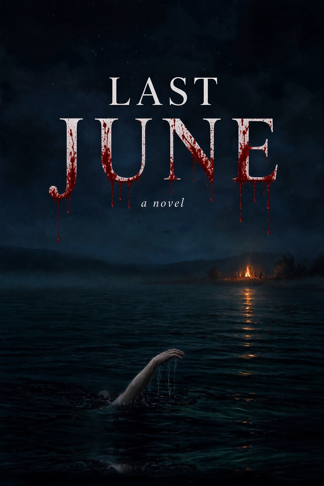

LAST
JUNE
A Novel · The Audiobook
One year after the lake took June Halloran, six friends return to Carden Island for a weekend. The ferry only runs one way tonight.
23
chapters
18k
words
Georgian Bay
noir
read-along text below
Now Playing · Last June
Loading the
Elevenlabs Text to Speech
AudioNative Player...
← Prev
…
Next →
← Previous chapter
Next chapter →
Contents
✕